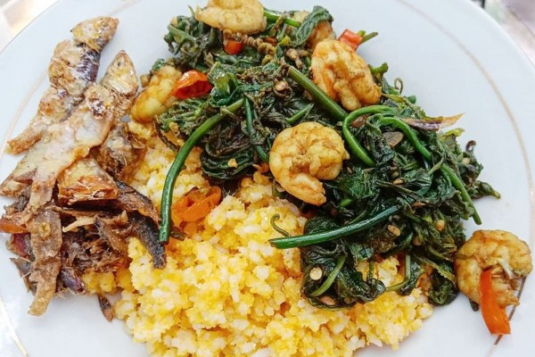
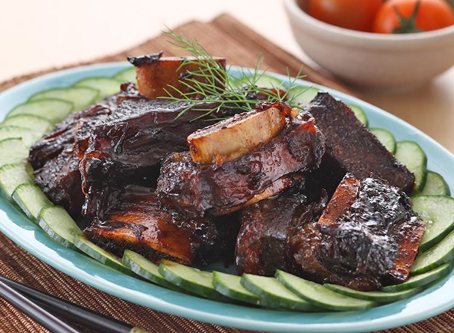
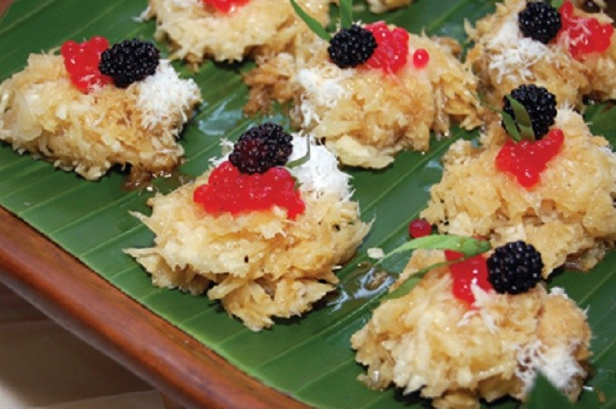
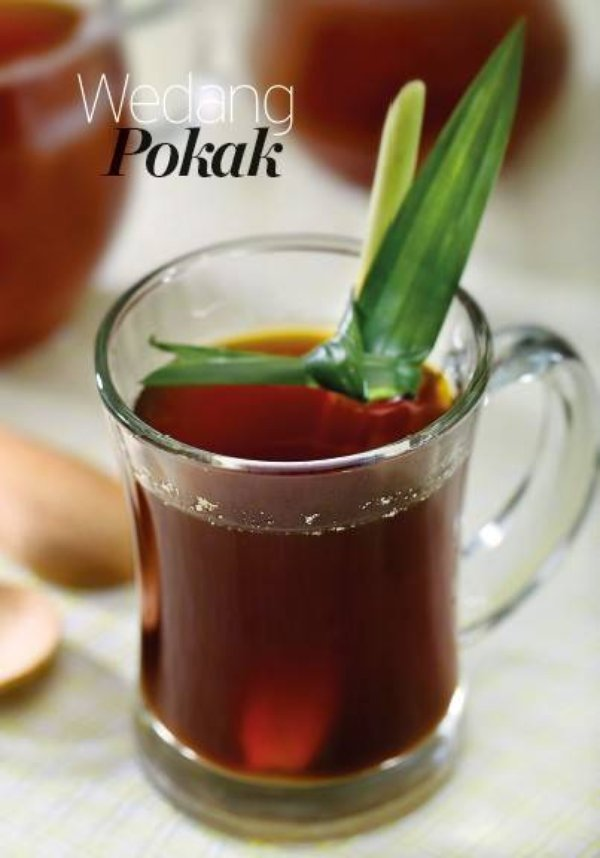

1. Nasi Aron

Nasi yang satu ini merupakan kuliner khas masyarakat suku tengger yang ada di Bromo.
Nasi yang gemar di konsumsi masyarakat suku tengger ini berbahan dasar jagung.
Ditambah dengan sayur daun ranti yang pada umumnya berasa pahit namun cara pengolahan dari suku tengger yang khas ini bisa menyulap sayur daun ranti ini menjadi sangat lezat sekali.
Nasi aron ini tidak dijual disetiap spot, namun kalian bisa menemukan nasi yang berkhasiat melawan diabetes ini di desa seruni yang berlokasi di sekitar penanjakan 2.
2. IGA Pasir Bromo

Makanan yang satu ini kerap kali kita temukan di restoran dan tempat makan yang ada dipinggir jalan.
Iga Pasir Bromo ini berbeda dengan menu iga pada umumnya.
Yang menjadi unik dan berbeda adalah cara memasak dan cita rasa yang khas dari Bromo.
Cara memasak Iga Pasir Bromo ini menjadi unik karena ditungkunya terdapat pasir dan rasa nya yang panas dan pedas ini membuat iga yang satu ini sangat cocok disantap ketika berada di Bromo.
Menu Kuliner Khas Bromo ini sangat direkomendasikan buat kamu khususnya pecinta rasa pedas.
3. Sawut Kabut Bromo

Kuliner Sawut Kabut Bromo ini sangat unik dan menarik sekali.
Rasa lezat makanan yang satu ini sudah sangat terkenal sampai Mancanegara juga loh.
Makanan ini juga sangat identik dengan masyarakata suku tengger yang ada di sekitar Gunung Bromo.
Sawut Kabut Bromo ini berbahan dasar dari singkong yang diolah dan dibentuk serupa gunung, kerucut atau gumpalan-gumpalan kecil.
Cita rasa dari kuliner khas bromo ini dari masing-masing daerah juga berbeda tergantung dengan jenis singkong yang dijadikan bahan dasar membuat Sawut Kabut Bromo.
Untuk bisa menikmati kuliner khas yang satu ini, kamu bisa menemukan di toko-toko Kota Probolinggo.
4. Minuman Herbal Pokak

Sesuai dengan namanya, minuman yang satu ini juga berkhasiat untuk menyembuhkan masalah kesehatan kamu.
Minuman herbal pokak ini dipercaya mampu mengatasi berbagai macam penyakit seperti ginjal, rematik, batuk, pusing kepala, dan juga untuk membuat badan terasa lebih hangat. Bahan yang digunakan untuk membuat minuman herbal ini adalah jahe, gula, daun pandan, keningar, serei dan juga cengkeh.
Minuman ini sangat pas sekali jika diminum di Bromo.
Jika kamu berlibur ke Gunung Bromo, diwajibkan banget untuk mencicipi 4 kuliner khas Bromo tersebut.
Untuk bisa menemukan tempat makan yang menyajikan menu kuliner khas bromo tersebut, kamu bisa minta tolong ke supir travel yang menjadi pilihan kamu untuk membantu menemukan tempat makan yang pas.